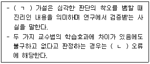
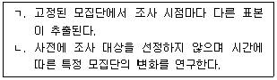
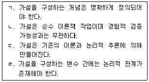
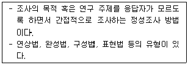
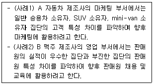

경영지도사-1차-2교시 (2021-04-03 기출문제)
1과목: 기업진단론
1. 재무제표 상에 표시된 각 항목의 값을 그대로 이용하여 손익분기점 정보, 현금흐름 정보 등을 분석하는 방법은?
- 비율분석
- 실수분석
- 지수분석
- 통계분석
- 산업분석
(정답률: 알수없음)

2. 표준비율에 관한 설명으로 옳지 않은 것은?
- 비율분석 시 비교ㆍ평가의 기준이 되는 재무비율이다.
- 한국은행의 산업평균비율은 기업규모가 반영된 가중평균 재무비율이다.
- 경쟁기업의 비율도 표준비율로 사용할 수 있다.
- 일반적 경험비율은 산업평균비율보다 객관적이다.
- 분석대상 기업의 과거 평균비율을 표준비율로 사용하면 경영성과의 변동추세 등을 파악할 수 있다.
(정답률: 알수없음)
3. 재무상태표에서 자본에 해당하는 항목은?
- 이익잉여금
- 장기차입금
- 매입채무
- 무형자산
- 당좌자산
(정답률: 알수없음)
4. 유동성(환금성)이 큰 자산에서 작은 자산 순으로 옳게 나열한 것은?
- 재고자산-당좌자산-유형자산 –무형자산
- 무형자산-유형자산-재고자산 –당좌자산
- 유형자산-무형자산-재고자산 –당좌자산
- 당좌자산-재고자산-무형자산 –투자자산
- 당좌자산-재고자산-투자자산 -유형자산
(정답률: 알수없음)
5. 포괄손익계산서 항목에 해당하는 것은?
- 이익준비금
- 이자수익
- 건설중인 자산
- 배당금
- 매입채무
(정답률: 알수없음)
6. 유동성비율에 관한 설명으로 옳지 않은 것은?
- 단기채무 상환 능력을 평가하는 비율이다.
- 기업에 자금을 대출한 금융기관이나 단기신용 제공자들이 많은 관심을 갖는 비율이다.
- 현금비율은 가장 보수적으로 유동성을 판단하는 비율이다.
- 높은 유동비율은 현금이나 단기자산을 효율적으로 운용하고 있다는 것을 의미한다.
- 당좌비율은 유동비율보다 유동성이 높다.
(정답률: 알수없음)
7. 부채비율(= 타인자본/자기자본) 이 100 % 일 때, 자기자본비율은?
- 50 %
- 100 %
- 150 %
- 200 %
- 300 %
(정답률: 알수없음)
8. 장기자산에 투자한 자본의 범위를 자기자본과 비유동부채까지 포함해서 자본배분의 안정성을 평가하는 비율은?
- 유동비율
- 자기자본이익률
- 비유동장기적합률
- 비유동비율
- 자기자본회전율
(정답률: 알수없음)
9. 기업 활동의 성과 및 효율성을 측정하여 개별 생산요소의 기여도 및 성과배분의 합리성 여부를 평가하는 비율이 아닌 것은?
- 총자산회전율
- 부가가치율
- 자본생산성
- 노동소득분배율
- 노동생산성
(정답률: 알수없음)
10. 기업 입장에서 높을(길)수록 좋지 않은 재무비율은?
- 노동생산성
- 매입채무회전기간
- 이자보상비율
- 총자산회전율
- 재고자산회전기간
(정답률: 알수없음)
11. 레버리지비율에 관한 설명으로 옳지 않은 것은?
- 기업이 어느 정도 타인자본에 의존하고 있는지를 측정하는 비율이다.
- 부채비율이 높을수록 기업의 소유주는 적은 자기자본으로 기업을 지배할 수 있는 이점을 갖는다.
- 자본을 운용하여 얻는 수익률이 이자율을 초과하면 레버리지가 높을수록 자기자본수익률이 축소된다.
- 기업의 장기채무에 대한 안전도를 평가하는 데 유용한 재무비율이다.
- 자기자본비율, 이자보상비율 등이 레버리지비율에 해당된다.
(정답률: 알수없음)
12. 매출액 100 억원, 순이익 5 억원인 기업의 총자산순이익률(ROI)은 10 %이다. 이때, 총부채(타인자본) 30 억원일 때, 자기자본순이익률(ROE)은?
- 10 %
- 15 %
- 20 %
- 25 %
- 30 %
(정답률: 알수없음)
13. 지수법에 관한 설명으로 옳은 것은?
- 지수법은 1819년 브리채트에 의해 제안되었다.
- 여러 개의 재무비율을 동시에 고려하여 기업의 경영성과와 재무상태를 종합적으로 평가하는 방법이다.
- 월(A. Wall)지수법은 정태비율(안정성)에 비해 동태비율(수익성)을 중시하고 있어 경영자의 입장에서 분석이라고 할 수 있다.
- 트랜트(J. Trant)지수법은 활동성보다 수익성을 중시하고 있어 여신자의 입장에서 분석이라고 할 수 있다.
- 브리채트가 선정한 재무비율에는 수익성을 측정하는 지표들이 포함되어 있지 않다.
(정답률: 알수없음)
14. 기업이 보유하는 부채와 지분의 시장가치를 기업이 보유하는 자산의 대체원가로 나눈 비율은?
- 주가매출액비율(PSR)
- 주가현금흐름비율(PCR)
- 토빈의 큐비율(Tobin's q ratio)
- 주가순자산비율(PBR)
- 주가DER비율
(정답률: 알수없음)
15. 경영자진단에 대한 체크포인트(check point)로 볼 수 없는 것은?
- 경영자의 경영이념
- 기업가 정신
- 위기관리 능력
- 경영자의 자질
- 원가관리체계의 확립여부
(정답률: 알수없음)
16. 경제환경분석 요인으로 볼 수 없는 것은?
- 경제성장율
- 경기전망
- 통화량
- 제품의 수명주기
- 물가
(정답률: 알수없음)
17. 매출액을 100 %로 하여 각 비용, 수익항목의 구성비를 백분율로 표시하여 작성한 것은?
- 공통형 재무상태표
- 지수형 재무상태표
- 공통형 손익계산서
- 지수형 손익계산서
- 지수형 재무제표
(정답률: 알수없음)
18. 기업(경영)진단절차에 관한 설명으로 옳지 않은 것은?
- 기업(경영)진단의 프로세스는 권고 (→) 예비진단(→)본진단이다.
- 예비진단의 중심은 자료수집과 조사 및 진단계획이다.
- 본진단은 예비진단을 거쳐 경영자미팅에 의해서 총괄적으로 문제점을 확인하여 기초진단을 거쳐 부문진단으로 나간다.
- 예비진단은 수신자와의 진단계약에서부터 시작된다.
- 부문진단은 예비진단과 기초진단에 의해서 파악된 경영상황 실태 및 문제점을 부문별로 나누어 보다 세부적으로 조사ㆍ분석을 기본적으로 행하는 진단이다.
(정답률: 알수없음)
19. 기업부실에 관한 설명으로 옳은 것은?
- 지급불능이란 법원에 의해서 파산선고가 공식적으로 내려진 경우이다.
- 경제적 부실이란 기업의 총자산가치가 총부채가치에 미치지 못하는 경우이다.
- 파산이란 기업의 총수익이 총비용에 미치지 못하는 경우이다.
- 사적화의는 기업구조조정협약에 따라 부실기업을 회생시키기 위하여 금융기관이 자율적으로 해당 부실기업을 지원하는 제도이다.
- 법정관리는 지급불능상태에 있는 기업을 법원의 감독아래 채권자와 주주들의 이해관계를 조정하여 기업을 회생시키는 제도이다.
(정답률: 알수없음)
20. 제품의 라이프사이클에서 안정적인 시장점유율을 얻게 되고 매출은 완만하게 성장하지만, 격심한 가격경쟁으로 인해 제품단위당 이익이 점차 감소하므로, 새로운 업종으로 진출이 필요한 단계는?
- 연구개발단계
- 성숙단계
- 성장단계
- 도입단계
- 쇠퇴단계
(정답률: 알수없음)
21. 기업(경영)진단에 관한 설명으로 옳지 않은 것은?
- 기업(경영)진단은 이상 징후를 발견하고 이에 대한 치료의 방안을 제시하는 것이다.
- 기업(경영)진단의 목표는 경영관리층에 대하여 경영기술과 경영계획 및 관리방법을 지도하는 것이다.
- 기업(경영)진단의 범위는 종합진단과 부문진단으로 구분할 수 있다.
- 기업(경영)진단의 대상은 제조업과 서비스업을 하는 중소기업이고 비영리조직은 대상이 아니다.
- 기업은 경영과 관리가 정상적으로 또는 합리적으로 이루어지고 있는가를 어떤 일정한 표준에 따라 진단하여야 한다.
(정답률: 알수없음)
22. 원형도표분석에 관한 설명으로 옳지 않은 것은?
- 기업의 종합적 경영 상태를 한눈에 볼 수 있도록 원형으로 표시하는 방법이다.
- 과거의 추세분석도 가능하고 상호비교분석도 가능하다.
- 기업의 어떤 부문이 특히 양호한지 또는 불량한지를 시각적으로 쉽게 판단할 수 있다.
- 지수법과 비교하는 경우 주요 재무비율을 이용하여 기업의 경영 상태를 종합적으로 평가한다는 점에서 공통점을 갖는다.
- 재무비율 선정의 객관성이 확보되며, 선정된 재무비율의 중요도를 반영할 수 있다.
(정답률: 알수없음)
23. 부산상사의 고정비는 2,000만원, 목표이익 3,000만원, 단위당변동비 600원, 제품의 판매단가는 1,000원이다. 부산상사의 손익분기점 매출량과 매출액은?
- 12,500개, 50,000,000원
- 50,000개, 50,000,000원
- 50,000개, 125,000,000원
- 125,000개, 125,000,000원
- 125,000개, 500,000,000원
(정답률: 알수없음)
24. 결합레버리지도에 관한 설명으로 옳은 것은?
- 영업이익의 변화율을 매출액의 변화율로 나눈 것
- 영업이익의 변화율을 주당순이익의 변화율로 나눈 것
- 주당순이익의 변화율을 매출액의 변화율로 나눈 것
- 영업이익의 변화율을 주당순자산의 변화율로 나눈 것
- 주당순이익의 변화율을 영업이익의 변화율로 나눈 것
(정답률: 알수없음)
25. 한국의 채권평가등급에 관한 설명으로 옳은 것은?
- 한국 최초의 신용평가회사는 1965년 설립된 대한신용정보회사이다.
- 회사채의 평가등급과정은 AAA∼D까지 10개의 등급으로 구분된다.
- 기업어음(CP)의 평가등급과정은 AAA∼ D까지 10개의 등급으로 구분된다.
- 국채의 평가등급과정은 AAA∼ D까지 20개의 등급으로 구분된다.
- 금융채의 평가등급과정은 AAA∼D까지 30개의 등급으로 구분된다.
(정답률: 알수없음)
2과목: 조사방법론
26. 인과관계에 관한 설명으로 옳지 않은 것은?
- 원인변수는 결과변수보다 시간적으로 우선한다.
- 원인변수 이외에 결과변수에 작용하는 외생변수가 존재해야 한다.
- 원인변수와 결과변수 간에 상관관계가 존재해야 한다.
- 원인변수와 결과변수간의 상관관계는 비허위적(non-spurious)이어야 한다.
- 원인변수와 결과변수간의 관계는 확률적이다.
(정답률: 알수없음)
27. 과학적 방법의 특징에 관한 설명으로 옳은 것은?
- 개별 현상에 대한 심층적 이해를 중시한다.
- 가능한 많은 설명 변수를 모형에 투입해야 한다.
- 동일한 연구과정을 거친다면 동일한 결론에 도달해야 한다.
- 이론적 주장에 대한 경험적 검증은 불필요하다.
- 연구 속 개념에는 반드시 하나의 정의만이 존재한다.
(정답률: 알수없음)
28. 통계적 가설검증에 관한 설명이다. ( ㄱ )과 ( ㄴ )에 들어갈 단어를 바르게 연결한 것은?

- ㄱ: 귀무, ㄴ: 1종
- ㄱ: 귀무, ㄴ: 2종
- ㄱ: 대립, ㄴ: 1종
- ㄱ: 대립, ㄴ: 2종
- ㄱ: 연구, ㄴ: 1종
(정답률: 알수없음)
29. 변수에 관한 설명으로 옳지 않은 것은?
- 매개변수는 독립변수의 결과이자 종속변수의 원인이다.
- 독립변수와 종속변수간의 관계는 조절변수의 영향을 받는다.
- 선행변수는 독립변수에 시간적으로 우선한다.
- 독립변수는 종속변수 값의 변화의 원인으로 추정되는 변수이다.
- 억제변수는 독립변수와 종속변수의 관계를 허위적으로 존재하게 한다.
(정답률: 알수없음)
30. 각각의 연구방법이 옳게 연결된 것은?

- ㄱ: 패널 연구, ㄴ: 코호트 연구
- ㄱ: 코호트 연구, ㄴ: 패널 연구
- ㄱ: 추세 연구, ㄴ: 패널 연구
- ㄱ: 패널 연구, ㄴ: 추세 연구
- ㄱ: 코호트 연구, ㄴ: 추세 연구
(정답률: 알수없음)
31. 가설에 관한 설명으로 옳은 것을 모두 고른 것은?

- ㄱ, ㄴ
- ㄴ, ㄷ
- ㄷ, ㄹ
- ㄱ, ㄷ, ㄹ
- ㄴ, ㄷ, ㄹ
(정답률: 알수없음)
32. n개 항목의 내적 일관성을 구하는 크론바흐 알파(Cronbach's alpha)에 관한 설명으로 옳지 않은 것은?
- -1 에서 +1 사이의 값을 가진다.
- 각 항목의 분산 값이 계산에 활용된다.
- 개별 항목이 전체 신뢰도에 기여하는 정도를 평가할 수 있다.
- 일반적으로 0.7 이상이면 내적 일관성이 높은 것으로 간주한다.
- 항목의 수에 영향을 받는다.
(정답률: 알수없음)
33. 일반적인 설문지 제작 과정을 옳게 나열한 것은?
- 질문내용결정 - 질문순서결정 - 사전조사 - 질문형태결정
- 질문형태결정 - 질문내용결정 - 질문순서결정 - 사전조사
- 질문내용결정 - 질문형태결정 - 사전조사 - 질문순서결정
- 질문내용결정 - 질문형태결정 - 질문순서결정 - 사전조사
- 질문형태결정 - 사전조사 - 질문내용결정 - 질문순서결정
(정답률: 알수없음)
34. 연구자 A는 고등학교 학생들의 성별 국어성적 차이, 개별 학생의 국어성적과 그 학생의 교내 등수와의 상관관계를 통계 분석을 통해 알아보고자 한다. 자료는 서베이를 통해 수집하였으며 국어성적은 0 ∼100점 사이의 해당 학기 중간고사 점수이다. 이 연구에 활용된 척도를 모두 나열한 것은?
- 명목척도, 비율척도
- 명목척도, 등간척도
- 서열척도, 비율척도
- 명목척도, 서열척도, 등간척도
- 서열척도, 등간척도, 비율척도
(정답률: 알수없음)
35. 리커트(Likert) 척도에 관한 설명으로 옳은 것은?
- 타인과 친밀한 사회적 관계를 차등적으로 맺고자 하는 의사를 측정한다.
- 응답자는 2개의 상반된 입장 차이를 연결하는 수식어를 선택한다.
- 5∼7개의 응답범주가 명확한 서열성을 띤다.
- 10명 내외의 심사원이 문항에 점수를 부여한다.
- 두개의 자극을 하나의 쌍으로 만들어 선택하게 한다.
(정답률: 알수없음)
36. 설문지 구성에 관한 설명으로 옳지 않은 것은?
- 동일한 응답범주의 경우 행렬식 질문을 활용한다.
- 응답자의 인적사항은 설문지 초반에 배치한다.
- 질문내용이 일부 응답자와 무관할 경우, 조건부 질문을 활용한다.
- 하나의 항목으로 하나의 내용을 묻는다.
- 다지선다형 응답은 발생 가능한 모든 응답을 제시한다.
(정답률: 알수없음)
37. 과학적 방법의 논리체계에 관한 설명으로 옳지 않은 것은?
- 연역법은 일반적인 것에서 특수한 것을 추론하는 방법이다.
- 연역법은 가설검증에, 귀납법은 탐색적 연구에 쓰인다.
- 귀납법은 특정 관찰로부터 모든 사건에 대한 일정 수준의 질서를 파악하고자 한다.
- 귀납법은 이론으로부터 가설을 설정하고, 가설의 내용을 현실 세계에서 관찰한다.
- 실제 연구과정에서는 연역법과 귀납법이 상호 보완적으로 활용된다.
(정답률: 알수없음)
38. 자료 수집 방법 중 심층면접법 대비 서베이법의 장점으로 옳지 않은 것은?
- 대규모 표본조사가 가능하다.
- 객관적 해석이 가능하다.
- 깊이 있는 질문이 가능하다.
- 결과의 일반화 가능성이 높다.
- 다양한 측면에서 차이 분석이 가능하다.
(정답률: 알수없음)
39. 사전에 준비된 표준양식에 관찰사실을 기록하는 것을 의미하는 관찰법은?
- 공개적(undisguised) 관찰
- 체계적(structured) 관찰
- 인위적(contrived setting) 관찰
- 기계적(mechanical) 관찰
- 자연상태(natural setting) 관찰
(정답률: 알수없음)
40. 다음에 해당하는 조사방법은?

- 프로빙(probing) 기법
- 투사법(projective technique)
- 에스노그라피(ethnography)
- 신디케이트(syndicate) 조사
- 섀도 트래킹(shadow tracking)
(정답률: 알수없음)
41. 실험의 내적타당성을 저해하는 외생변수의 유형에 해당하지 않는 것은?
- 주효과(main effect)
- 성숙효과(maturation)
- 시험효과(testing effect)
- 측정방법의 변화(instrumentation)
- 실험대상의 소멸(mortality)
(정답률: 알수없음)
42. 일정기간 동안 구성원들이 유지되는 고정된 표본을 대상으로 반복적으로 실시하는 조사는?
- 애드혹(ad-hoc) 조사
- 옴니버스(omnibus) 조사
- 횡단(cross-sectional) 조사
- 패널(panel) 조사
- 사례(case) 조사
(정답률: 알수없음)
43. 집단 간 평균 차이를 분석하는 통계분석 방법으로 바르게 짝지어진 것은?
- t-test, 분산분석
- t-test, 상관관계분석
- 분산분석, 회귀분석
- 상관관계분석, 회귀분석
- t-test, 회귀분석
(정답률: 알수없음)
44. 회귀분석에서 다중공선성(multicollinearity) 문제에 관한 설명으로 옳지 않은 것은?
- 다중회귀분석에서 발생할 수 있다.
- 독립변수들 간에 강한 상관관계가 존재하는 경우 발생할 수 있다.
- 단순회귀분석에서 유의한 영향을 미치는 독립변수가 다중회귀분석에서는 비유의적으로 나타날 수 있다.
- 다중공선성의 진단을 위해 분산팽창요인(variance inflation factor; VIF)값을 확인한다.
- 다중공선성의 진단을 위해 결정계수(coefficient of determination)값을 확인한다.
(정답률: 알수없음)
45. 통계분석 방법 중 요인분석과 군집분석에 관한 설명으로 옳지 않은 것은?
- 군집분석은 다수의 대상들(소비자, 제품 등)을 그들이 공유하는 특성을 토대로 그룹핑하는 통계기법이다.
- 요인분석은 다수의 변수들 간의 상관관계를 분석하여 소수의 그룹으로 축약하는 기법이다.
- 요인분석에는 탐색적 요인분석과 확인적 요인분석이 있다.
- 군집분석은 시장세분화에 활용할 수 있다.
- 요인분석은 측정도구의 신뢰도 분석에 활용할 수 있다.
(정답률: 알수없음)
46. 다음 사례에서 공통적으로 활용할 수 있는 주요 통계분석 방법은?

- 판별분석
- 컨조인트분석
- 다차원척도법
- 경로분석
- 주성분분석
(정답률: 알수없음)
47. 비표본추출오류에 해당하지 않는 것은?
- 20대와 30대가 비슷한 비율로 구성된 모집단에서 20대 구성원만을 표본으로 추출하여 발생하는 오류
- 설문지의 개별 문항이나 전체 구성이 잘못되어 발생하는 오류
- 조사면접원이 잘못된 질문이나 기록을 함으로써 발생하는 오류
- 응답자가 잘못 응답하거나 응답하지 않음으로써 발생하는 오류
- 수집된 자료를 부적절한 통계기법으로 분석함으로써 발생하는 오류
(정답률: 알수없음)
48. A식품회사는 20,000개의 점포로 구성되는 모집단으로부터 비례적층화표본추출을 사용하여 210개의 점포를 추출하고자 한다. 전체 20,000개의 점포는 대형 점포 2,000개, 중형 점포 6,000개, 소형 점포 12,000개이다. 이 경우 추출되는 중형 점포의 수는?
- 21개
- 60개
- 63개
- 70개
- 126개
(정답률: 알수없음)
49. 표본의 크기에 관한 설명으로 옳지 않은 것은?
- 비확률표본추출의 경우 표본의 크기는 예산과 시간에 따라 조사자가 판단하여 결정한다.
- 비확률표본추출의 경우 표본의 크기를 계산하는 특별한 방법은 없다.
- 확률표본추출의 경우 조사하고자 하는 변수의 분산 값이 클수록 표본의 크기는 커야 한다.
- 확률표본추출의 경우 허용오차가 클수록 표본의 크기는 커야 한다.
- 확률표본추출의 경우 추정치에 대해서 높은 신뢰수준을 원할수록 표본의 크기는 커야 한다.
(정답률: 알수없음)
50. 확률표본추출에 해당하는 표본추출방법으로 바르게 짝지어진 것은?
- 단순무작위표본추출, 판단표본추출
- 층화표본추출, 판단표본추출
- 단순무작위표본추출, 할당표본추출
- 군집표본추출, 할당표본추출
- 층화표본추출, 군집표본추출
(정답률: 알수없음)